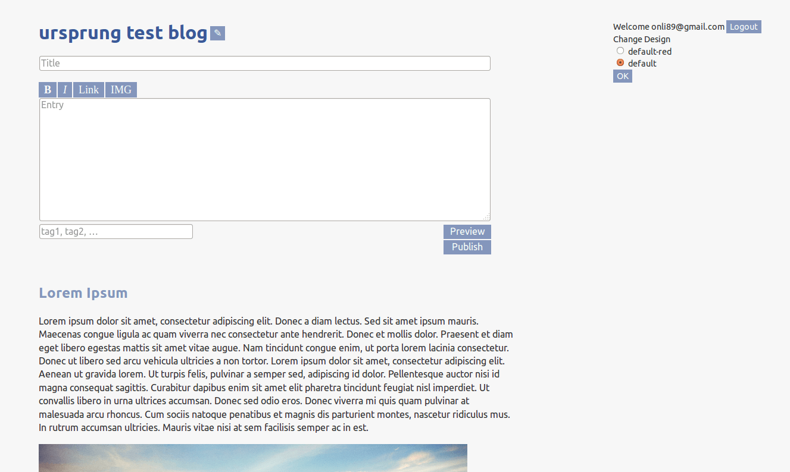
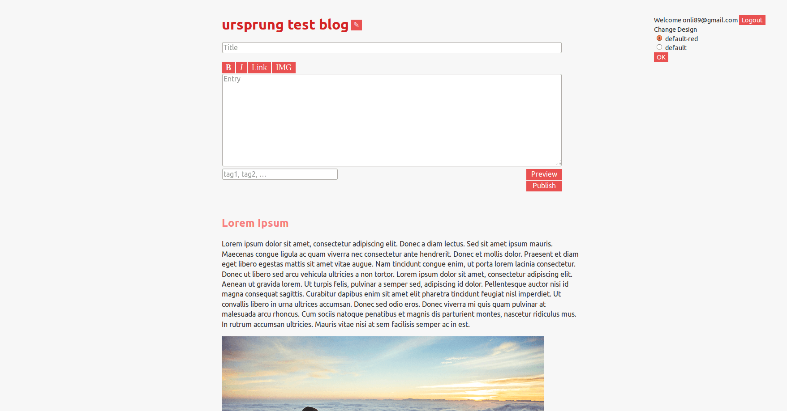

{kind=link}
Features
- Frontend Administration
- There is no backend. As soon as you are logged in, an editor and other control elements appear on the normal blog. Making it as easy as possible to just start writing. 
- Caching
- Blogs generating their pages dynamically break down under many visitors. Static site generator solve that, but… they are static. Ursprung generates pages dynamically, but then caches the generated page, generating less work and faster response times for all following visitors.
- Comments, Trackbacks and Pingbacks
- User feedback is what makes a blog a blog. Comments, Trackacks and Pingbacks are fully supported.
Comments authors have their gravatar, can cite each other and have access to markdown syntax. Trackbacks and Pingbacks work, autodiscovery is set up, and the implementation was tested with the classical blogengines Wordpress and Serendipity. - Markdown
- Format your entries with HTML, or use the nice Kramdown implementation of Markdown.
- Against Spam: Bayes filter and honeypot
- Spam sucks. An integrated bayes filter helps you fight it, and the honeypot helps prevent it.
- Themeable
- The default design is not even bad - it is minimalistic while trying to be not too plain. But if you don't like it, writing your own is fully supported. Use the default templates and just change the CSS, or overwrite the templates as well to customize ursprung totally. 
- Ruby, Sinatra, SQLite, Persona - and free
- Ruby and Sinatra are a perfect base for a small blog like this, modern but proven. SQLite as a database in a file is easy to manage, and its read performance is more than good enough for all but the highest traffic blogs. Persona takes care of the login, saving us from dealing with passwords.
Ursprung's license is the AGPL.
Install it
The easiest way to install is to clone the git repo, install the dependencies with Bundler and then start the server. Make sure you have Ruby installed first.git clone https://github.com/onli/dsnblog.git ursprung
cd ursprung
bundle install
rackup -E testing -p 9292